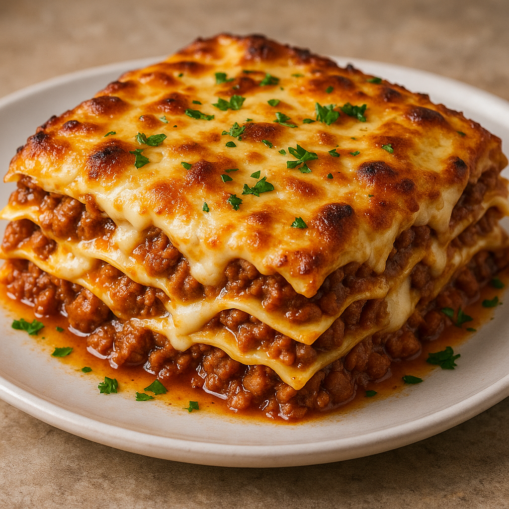

Home
Lasagna

Description
A classic Italian comfort dish with layers of tender pasta, rich beef
ragù, creamy béchamel, and gooey melted cheese. Each bite delivers a
perfect balance of savory, cheesy, and hearty flavors, making it the
ultimate crowd-pleaser.
Ingredients
- 9 lasagna noodles
- 500g ground beef
- 1 onion, chopped
- 2 cups tomato sauce
- 2 cups mozzarella cheese, shredded
- 1 cup ricotta cheese
- 1 cup béchamel sauce
- 2 tbsp olive oil
- Salt, pepper, dried oregano
Steps
-
Prepare meat sauce: Heat olive oil, sauté onion, add ground beef, cook
until browned, then stir in tomato sauce and seasonings.
- Cook noodles: Boil lasagna noodles until al dente; drain.
-
Layer lasagna: Spread béchamel on the bottom of a baking dish. Add
noodles, meat sauce, ricotta, and mozzarella. Repeat layers.
-
Bake: Top with mozzarella, cover with foil, and bake at 180°C (350°F)
for 25–30 minutes. Remove foil, bake 10 minutes more until golden.